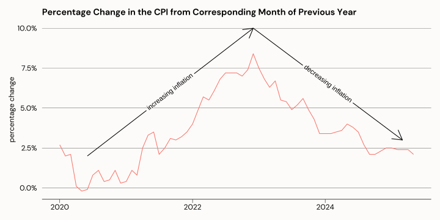
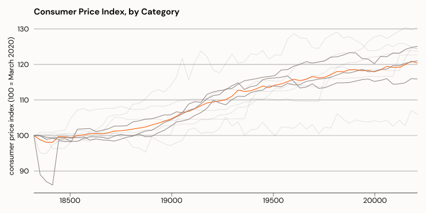
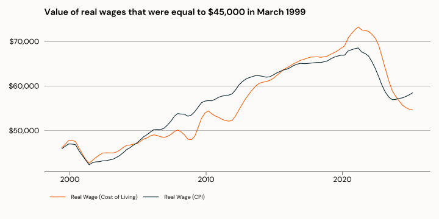
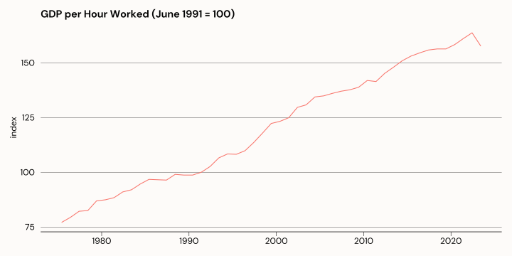
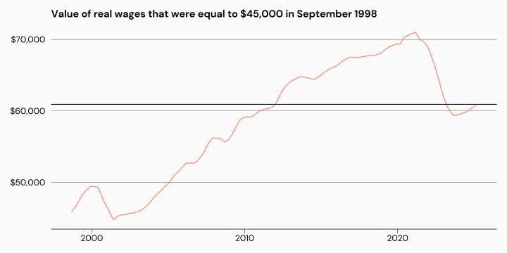
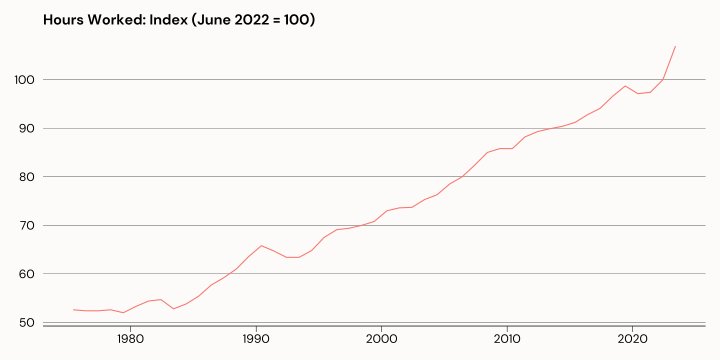
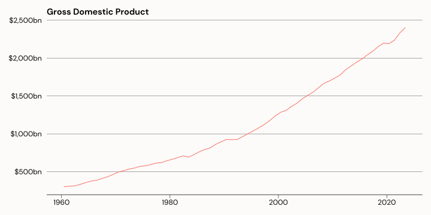
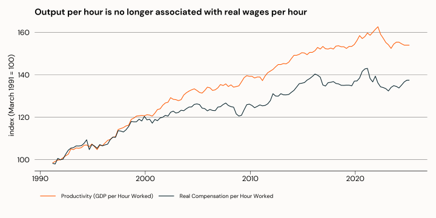
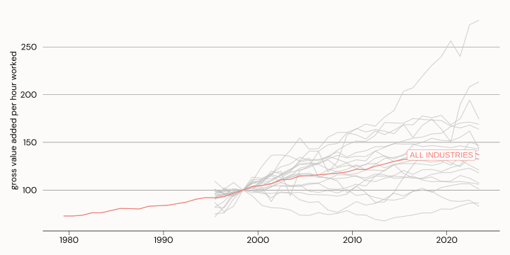
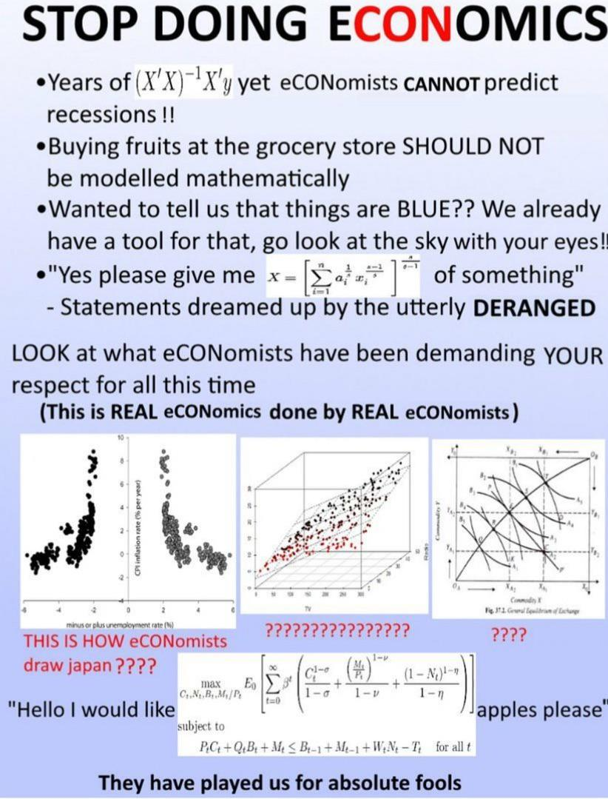

Economics, Political Economy, Industrial Policy
Hamish Gamble
Section 1: Hot Topics
Inflation Tumbles!
- How is inflation measured?
- What happens to prices when inflation goes down?
- Does the reporting match your experience?
Productivity Disaster!
- What is productivity?
- How is productivity measured?
- What drives changes in productivity?
Section 2: Talking about Economic Concepts
Economic Concepts
Inflation
Inflation (or, the Consumer Price Index)
- The CPI is a measure of changes in the price of a “basket” of goods and services.
- The basket includes (among other things):
- Food and non-alcoholic beverages
- Alcohol and tobacco
- Housing
- It represents the average inflation experience - and is not reflective of changes in cost of living.
Reporting Inflation - Index
- CPI data is reported as an index, or as a % change compared to the previous quarter, or previous year.
- an index shows how prices have changed relative to a value of 100 in the reference period.
- The CPI is indexed so that the 2011/12 financial year is considered 100.
- An index of 110 in March 2020 would mean that prices have increased by 10% since the reference period.
Reporting Inflation - Percentage Change
- CPI data is reported as an index, or as a % change in since last month, last quarter, or last year.
- A percentage change measures the relative change in prices compared to another period.
- The annual change is a measure of the price now compared to the price one year ago.
- The change from previous quarter is a measure of the price now compared to the price 3 months ago.
Reporting Inflation

Inflation - By Type
Inflation - Cost of Living
| Change in living costs by product category | |
|---|---|
| % change between March 2025 and March 2024 | |
| Price Category | % change |
| Insurance and financial services | 8.2 |
| Alcohol and tobacco | 6.4 |
| Education | 6.0 |
| Health | 4.2 |
| All groups | 3.4 |
| Wages | 3.4 |
| Food and non-alcoholic beverages | 3.2 |
| Housing | 2.4 |
| Recreation and culture | 1.7 |
| Clothing and footwear | 1.6 |
| Furnishings, household equipment and services | 0.7 |
| Communication | 0.0 |
| Transport | -1.3 |
| Change in living costs by product category | |
|---|---|
| % change between March 2025 and March 2015 | |
| Price Category | % change |
| Alcohol and tobacco | 77.2% |
| Insurance and financial services | 69.9% |
| Health | 46.2% |
| Education | 42.1% |
| All groups | 34.3% |
| Transport | 32.6% |
| Food and non-alcoholic beverages | 31.3% |
| Wages | 28.7% |
| Housing | 26.4% |
| Furnishings, household equipment and services | 19.6% |
| Recreation and culture | 18.5% |
| Clothing and footwear | 1.4% |
| Communication | −20.9% |
Inflation - Wages
Economic anxiety
- feel stressed?
- capitalism got you down?
- you are right to feel anxious
- you are forced to pursue your personal (monetary) interest because you need to to survive
- employers use this to divide
- hard to build solidarity
- weaponised since at least the 80s
- the value of solidarity
Productivity (or, output per hour worked)
- Labour Productivity is a measure of Gross Domestic Product per hour worked.
- How many workers does it take to produce 1 widget?
- But there are other inputs into production besides labour, including capital
- Changes in output can occur even without changes to input
Productivity - Measurement Issues
- It is relatively easy to measure and describe output per worker.
- Measuring output per unit of labour and capital is much more complicated, and questionable.
- What is a unit of labour-capital?
- Measuring productivity in the public sector basically shouldn’t be done.
- You would increase productivity in Education by reducing the number of teachers per student.
Productivity Trends
Productivity Trends - 20 year average

- Clearly not a new problem
- 20-year average productivity growth was pretty stable up until about 2013
- Significant declines since then. Covid rebound probably an illusion
Productivity Trends - Hours worked and GDP


Productivity Trends - Workers Share
- If productivity is a measure of output per hour, it would only be fair to compare that with how much compensation (in real terms) workers are getting per hour.

Sector
Productivity - Wage Share
Tariffs
Tariffs
- What is a tariff?
- Tariffs throughout history
- Are tariffs inherently bad?
- Protectionism, reindustrialisation
- Institutions, (neo)liberalism
Industrial Capabilities
- Core concepts:
- a country makes (or does) what it knows
- products (or activities) represent combinations of knowledge
- Capabilities are like letters in Scrabble
- The more you have, the more words you can make
- Rare letters create words worth more points
Industrial Capabilities

An apple in the supermarket represents:
Horticulture
Pest control
Refrigeration
Logistics
Industrial Capabilities

An iPhone represents:
- Semiconductors
- Software/Hardware Engineering
- Materials science
- Lenses
- Marketing
- Packaging
Measuring Industrial Capabilities
- Export data reveals what a country makes
- Comparison between countries reveals which capabilities are common, and which are rare
- The presence of different capabilities in different countries allows a ranking called the Economic Complexity Index
Why does it matter?
- The Economic Complexity Index is predictive of the direction of future economic growth.
- Countries with higher complexity are predicted to grow faster
- Useful tool to identify productive capabilities of a country
- Can be used to identify future opportunities
Why does it matter to Australia?

- Australia’s ranking in 2023 was 105th - Sandwiched between Botswana and Côte d’Ivoire
- Australia’s exports are concentrated in only a few products
- Australia’s exports are lower in average complexity
- Australia does not have the industrial capabilities of other developed countries.
What can we do?
Economics and Economists
Economists
- Know it all
- Work in finance
- Kinda annoying
- Think that adding maths equations make their work more “real”

Political Economy
- Despite what economists would have you believe:
- Economics is not an independent, neutral, or technical system
- Economics is inseparable from politics
- You can’t eat “headline inflation fell to 2.4%”
What is The Economy?
- Is the economy how much we produce in total?
- Is the economy how much we produce per person?
- Is the economy how well we meet the needs of society?
- Is the economy how well the stock market is performing?
## Creating Value
The capitalist class / the working class
- Capital realism/hypernormalisation
The role of the State in preserving the status quo
Solidarity among the working class
What is to be done?
- industry policy
- gulag
- collective power and class solidarity